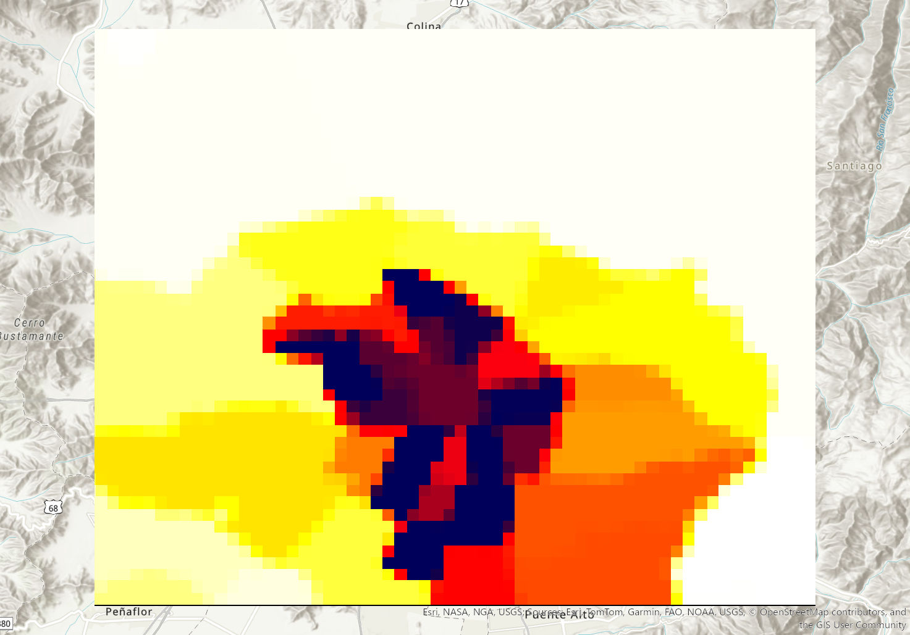
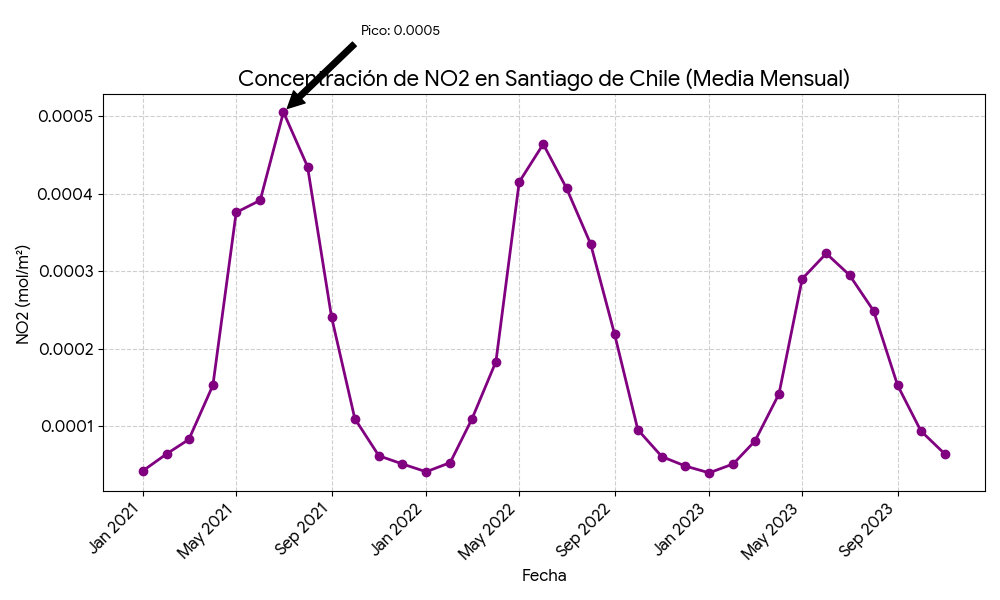

Monitoreo de NO2 en Santiago de Chile
Análisis de patrones de contaminación atmosférica con datos satelitales Sentinel-5P.
NO2
Contaminante Clave
Sentinel-5P
Fuente de Datos
3.5x5.5 km
Resolución de Sensor
R² ≈ 0.8
vs Estaciones Terrestres
Resumen Ejecutivo
-
Análisis de 3 Años
Se analizaron datos de 2021 a 2024 para identificar patrones y tendencias a largo plazo.
-
Picos Invernales
Se registraron peaks de hasta 0.000376 mol/m² en invierno, exacerbados por la inversión térmica.
-
Validación Rigurosa
Los datos satelitales muestran una alta correlación (R² ≈ 0.8) con mediciones de estaciones terrestres.
-
Decisiones Informadas
La alta resolución (3.5x5.5 km) permite un monitoreo detallado para la gestión de la calidad del aire.
Visualizaciones y Datos

Mapa de Santiago con sus Comunas
Mapa que muestra las comunas de la Región Metropolitana de Santiago.

Mapa de Concentración Promedio Anual de NO2
Visualización de los niveles promedio de dióxido de nitrógeno en Santiago de Chile durante el período de estudio.

Mapa de Densidad de Población en Santiago
Mapa contextual que muestra la distribución de la densidad de población en la Región Metropolitana de Santiago.
.png)
Evolución Mensual de la Concentración de NO2 (2021-2024)
Serie temporal que muestra los picos de concentración de NO2 durante los meses de invierno, influenciados por la inversión térmica.

Pico de Concentración de NO2
Detalle del peak de concentración de NO2 durante el período de invierno, generado a partir de los datos satelitales.
Metodología Científica
Este análisis se realizó utilizando un script personalizado de Google Earth Engine.
1. Fuente de Datos
Datos del sensor TROPOMI (Sentinel-5P), colección COPERNICUS/S5P/OFFL/L3_NO2. Este instrumento ofrece una resolución espacial de 3.5km x 5.5km.
2. Procesamiento
Se analizaron datos diarios desde 2021 a 2024, agregados en promedios mensuales para identificar tendencias y anomalías estacionales en Google Earth Engine.
3. Validación y Certeza
La precisión de los datos satelitales se validó contra estaciones de monitoreo en tierra, obteniendo un coeficiente de correlación (R²) de aproximadamente 0.8 en promedios mensuales.